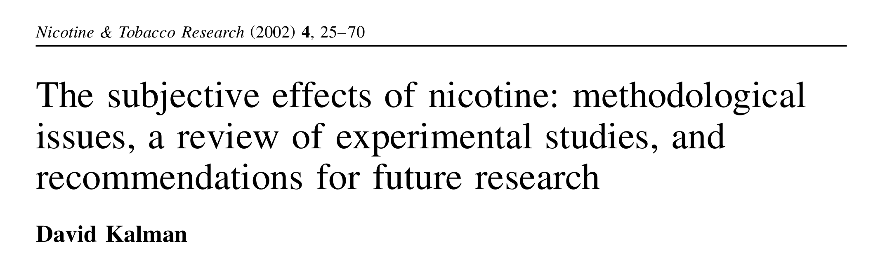
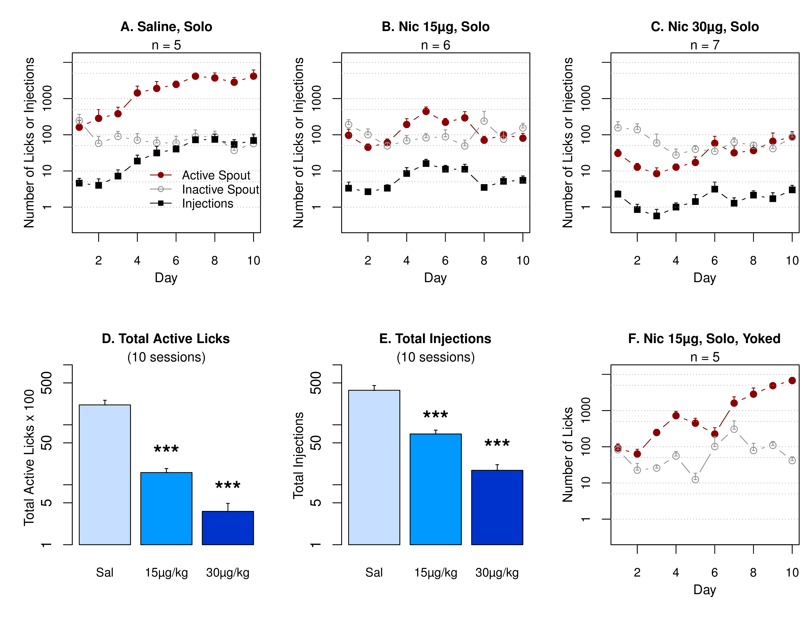
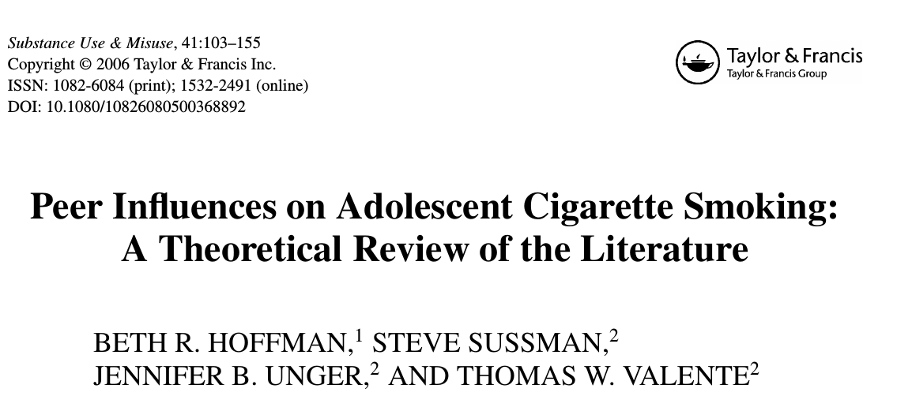
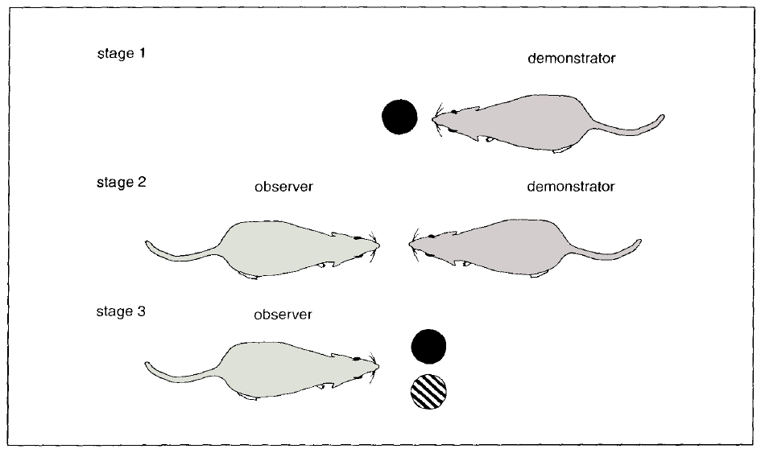
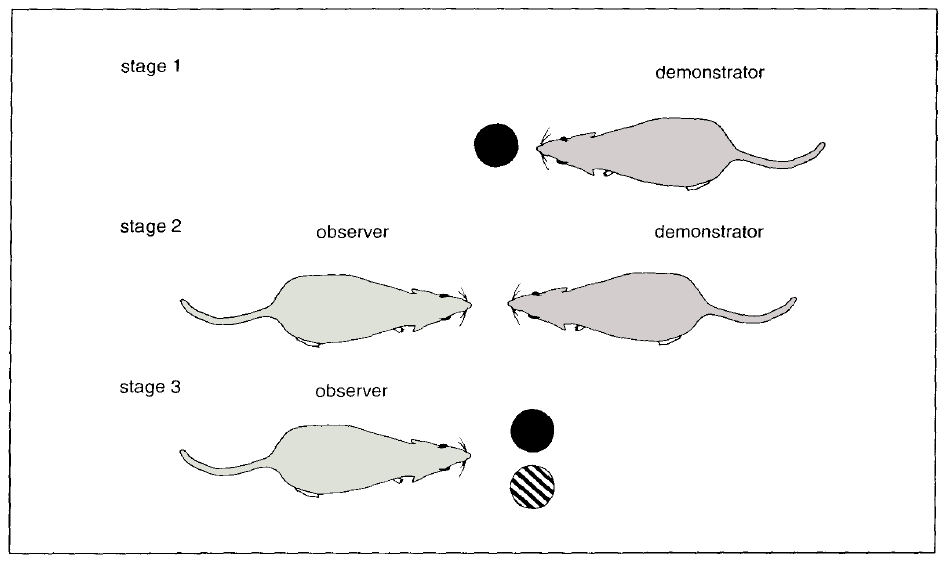
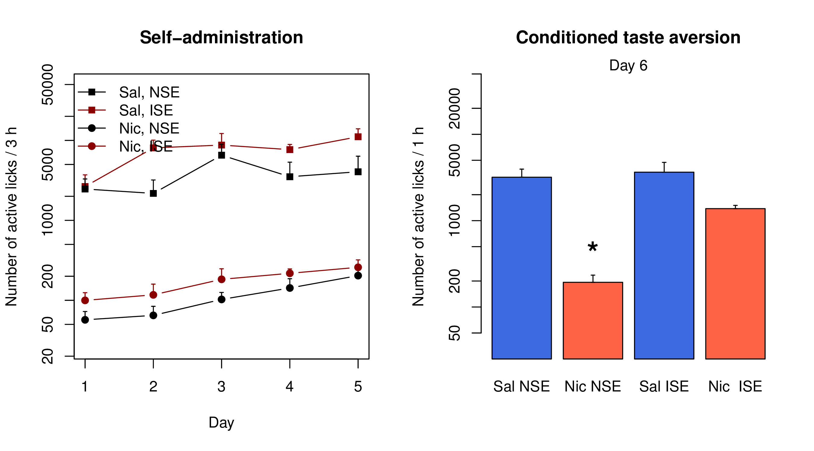
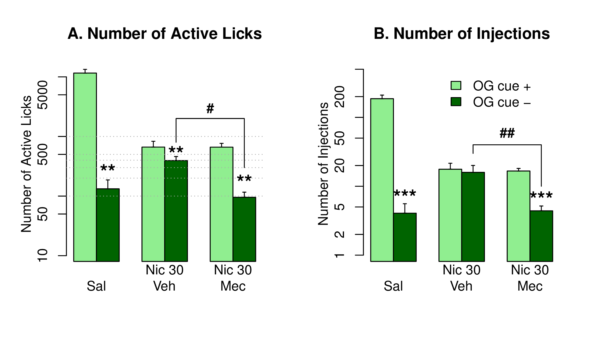
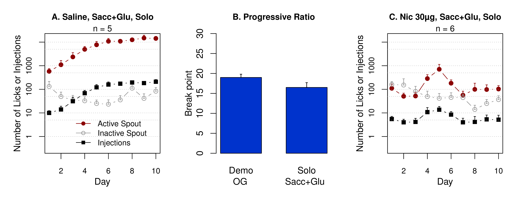
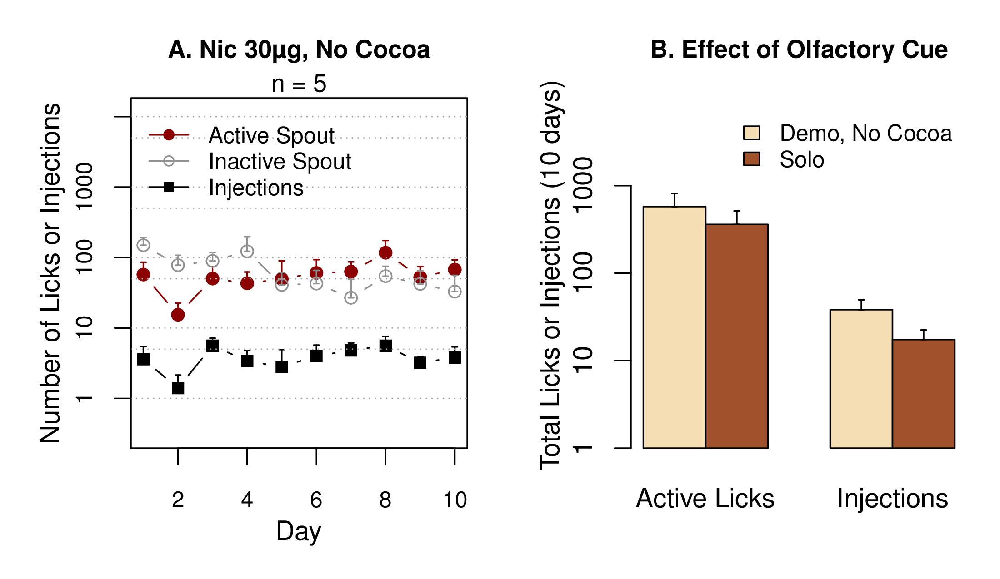
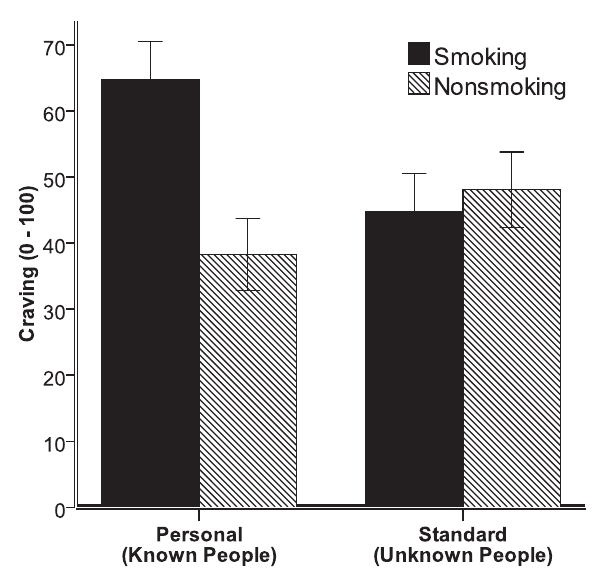

Socially-acquired nicotine self-administration and the role of carbon disulfide
Hao Chen
University of Tennessee Health Science Center
Rat GWAS retreat | University of Chicago | Sept 17 2014
Tobacco use is the leading preventable cause of death

- Cigarette smoking is responsible for 90% of all lung cancers.
- On average, smokers die 10 years earlier than nonsmokers.
Initial smoking experience
 Coughing, nausea, dizziness, sickness, burning throat, headache
Coughing, nausea, dizziness, sickness, burning throat, headache

Nicotine induces drug high only in significantly nicotine-deprived smokers. Nicotine is primarily aversive in non-smokers and ex-smokers.
Nicotine self-administration with flavor cue


Flavor cue does not support nicotine self-administration
Conditioned aversion to self-administered nicotine

Social environment influences smoking behavior


 

Operant chamber setup

Social learning induces nicotine self-administration

Social learning reverses nicotine CTA
Operant licking driven by nicotine
Highly appetitive cue does not support nicotine self-administration
Familiar vs. stranger peer

What is the social signal?
Olfactory but not gustatory cue is required

CS2 and flavor cue

Nicotine intake

Do people serve as cues to smoke?
Conklin CA, et al. Nicotine Tob Res. 2013. PMID: 23873978.
Social context induced reinstatement

Context-induced reinstatement

Summary
- Social transmission of a nicotine-associated odor cue is required for nicotine self-administration with a contingent flavor cue.
- Carbon disulfide is sufficient to mediate social learning in the absence of a live rat.
- Socially-transmitted drug cue enhances drug-seeking behavior.
- Other data suggest that:
- infralimbic cortex is required for social learning to modulate nicotine intake.
- oxytocin receptor antagonist in infralimbic cortex blocks social learning.
- oxytocin in infralimbic cortex supports nicotine intake.
- DNA methylation in infralimbic cortex is potentially involved in the long-lasting effect of social learning.
Acknowledgment